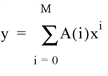
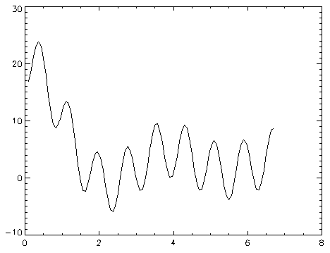

The SVDFIT function performs a least squares fit with optional error estimates. Either a user-supplied function written in the IDL language or a built-in polynomial can be used to fit the data.
Note: SVDFIT only works for functions whose parameters are linearly independent. To perform a fit for a function whose parameters are linearly dependent, use either CURVEFIT or LMFIT .
SVDFIT is based on the routine svdfit described in section 15.4 of Numerical Recipes in C: The Art of Scientific Computing (Second Edition), published by Cambridge University Press, and is used by permission.
Result = SVDFIT( X , Y [, M ] [, A = vector ] [, CHISQ = variable ] [, COVAR = variable ] [, / DOUBLE ] [, FUNCTION_NAME = string ] [, / LEGENDRE ] [, MEASURE_ERRORS = vector ] [, SIGMA = variable ] [, SING_VALUES = variable ] [, SINGULAR = variable ] [, STATUS = variable ] [, TOL = value ] [, VARIANCE = variable ] [, YFIT = variable ] )
Returns a vector of coefficients.
An n -element vector containing the independent variable values. X may be of type integer, floating point, or double-precision floating-point.
A vector of dependent variables, the same length as X .
The number of coefficients in the fitting function. For polynomials, M is equal to the degree of the polynomial + 1. If the M argument is not specified, you must supply initial coefficient estimates using the A keyword. In this case, M is set equal to the number of elements of the array specified by the A keyword.
This keyword is both an input and output keyword. Set this keyword equal to a variable containing a vector of initial estimates for the fitted function parameters. On exit, SVDFIT returns in this variable a vector of coefficients that are improvements of the initial estimates. If A is supplied, the M argument will be set equal to the number of elements in the vector specified by A.
Set this keyword equal to a named variable that will contain the value of the unreduced chi‑square goodness-of-fit.
Set this keyword equal to a named variable that will contain the covariance matrix of the fitted coefficients.
Note: The COVAR matrix depends only upon the independent variable X and (optionally) the MEASURE_ERRORS. The values do not depend upon Y. See section 15.4 of Numerical Recipes in C (Second Edition) for details.
Set this keyword to force the computation to be done in double-precision arithmetic.
Set this keyword equal to a string containing the name of a user-supplied IDL basis function with M coefficients. If this keyword is omitted, and the LEGENDRE keyword is not set, IDL assumes that the IDL procedure SVDFUNCT, found in the file svdfunct.pro , located in the lib subdirectory of the IDL distribution, is to be used. SVDFUNCT uses the basis functions for the fitting polynomial:

The function to be fit must be written as an IDL function and compiled prior to calling SVDFIT. The function must accept values of X (a scalar), and M (a scalar). It must return an M -element vector containing the basis functions.
See the Examples section below for an example function.
Set this keyword to use Legendre polynomials instead of the function specified by the FUNCTION_NAME keyword. If the LEGENDRE keyword is set, the IDL uses the function SVDLEG found in the file svdleg.pro , located in the lib subdirectory of the IDL distribution.
Set this keyword to a vector containing standard measurement errors for each point Y [ i ]. This vector must be the same length as X and Y .
Note: For Gaussian errors (e.g., instrumental uncertainties), MEASURE_ERRORS should be set to the standard deviations of each point in Y . For Poisson or statistical weighting, MEASURE_ERRORS should be set to SQRT( Y ).
Set this keyword to a named variable that will contain the 1-sigma uncertainty estimates for the returned parameters.
Note: If MEASURE_ERRORS is omitted, then you are assuming that the polynomial (or your user-supplied model) is the correct model for your data, and therefore, no independent goodness-of-fit test is possible. In this case, the values returned in SIGMA are multiplied by SQRT(CHISQ/( N – M )), where N is the number of points in X , and M is the number of coefficients. See section 15.2 of Numerical Recipes in C (Second Edition) for details.
Set this keyword to a named variable in which to return the singular values from the SVD. Singular values which have been removed will be set to zero.
Set this keyword equal to a named variable that will contain the number of singular values returned. This value should be 0. If not, the basis functions do not accurately characterize the data.
Set this keyword to a named variable that will contain the status of the computation. Possible values are:
STATUS = 0: The computation was successful.
STATUS > 0: Singular values were found and were removed. STATUS contains the number of singular values.
Note: If STATUS is not specified, any error messages will be output to the screen.
Set this keyword to the tolerance used when removing singular values. The default is 10 -5 for single precision, and 2x10 -12 for double precision (these defaults are approximately 100 and 10000 times the machine precisions for single and double precision, respectively).
Setting TOL to a larger value may remove coefficients that do not contribute to the solution, which may reduce the errors on the remaining coefficients.
Set this keyword equal to a named variable that will contain the variance (sigma squared) of each coefficient M .
Set this keyword equal to a named variable that will contain the vector of calculated Y values.
This example fits a function of the following form:
First, create the function in IDL:
FUNCTION svdfit_funct, X ,M
RETURN,[ [1.0], [SIN(2*X)/X], [COS(4.*X)^2.] ]
END
Then create a procedure to perform the fit. Create the following file called svdfit_doc.pro :
PRO svdfit_doc
; Provide an array of coefficients:
C = [7.77, 8.88, -9.99]
X = FINDGEN(100)/15.0 + 0.1
Y = C[0] + C[1] * SIN(2*X)/X + C[2] * COS(4.*X)^2.
; Set uncertainties to 5%:
measure_errors = 0.05 * Y
; Provide an initial guess:
A=[1,1,1]
result_a = SVDFIT(X, Y, A=A, MEASURE_ERRORS=measure_errors, $
FUNCTION_NAME='svdfit_funct', SIGMA=SIGMA, YFIT=YFIT)
; Plot the results:
PLOT, X, YFIT
FOR I = 0, N_ELEMENTS(A)-1 DO $
PRINT, I, result_a[I], SIGMA[I], C[I],$
FORMAT = $
'(" result_a ( ",I1," ) = ",F7.4," +- ",F7.4," VS. ",F7.4)'
END
Place the file example_svdfit.pro in a directory in the IDL search path, and enter example_svdfit at the command prompt to create the plot.
|
 |
In addition to creating the above plot, IDL prints:
result_a ( 0 ) = 7.7700 +- 0.0390 VS. 7.7700
result_a ( 1 ) = 8.8800 +- 0.0468 VS. 8.8800
result_a ( 2 ) = -9.9900 +- 0.0506 VS. -9.9900
|
Original |
Introduced |
|
5.4 |
Deprecated the WEIGHTS keyword. |
|
5.6 |
Added SING_VALUES, STATUS, and TOL keywords |
CURVEFIT , GAUSSFIT , LINFIT , LMFIT , POLY_FIT , REGRESS , SFIT